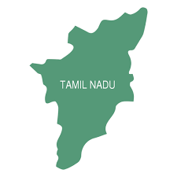

Tamil Nadu

Demographic Profile:
- Population: Approximately 72 million
- Major Cities: Chennai (Capital), Coimbatore, Madurai, Tiruchirappalli
- Language: Tamil (Official)
- Literacy Rate: High literacy rate compared to the national average
- Urbanization: Significant urban population, with a strong rural base.
- Cultural Diversity: Rich cultural heritage with a blend of traditional and modern influences.
Economic Profile:
- GSDP: ₹27.22 trillion (US$310 billion) (Approximate)
- Key Sectors:
- Manufacturing (Automobiles, Textiles, Electronics)
- Information Technology (IT) and IT-enabled Services
- Agriculture (Rice, Sugarcane, Cotton)
- Tourism
- Healthcare
- Industrial Hub: Known for its strong manufacturing base, especially in the automotive sector.
- IT Sector: Chennai is a major IT hub, attracting global companies.
- Agricultural Significance: Fertile lands contribute to substantial agricultural output.
- Tourism: Popular for its temples, historical sites, and scenic beauty.
- Education: High quality educational institutions and a skilled workforce.
- Renewable Energy: a leading state in the production of renewable energy.